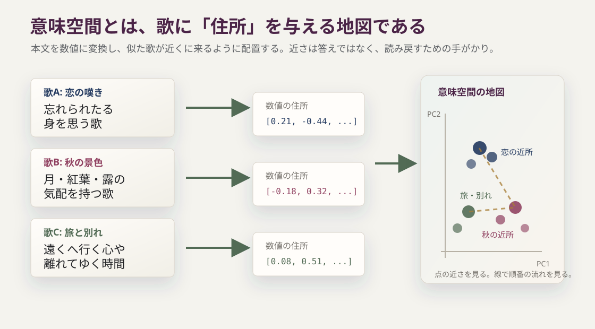
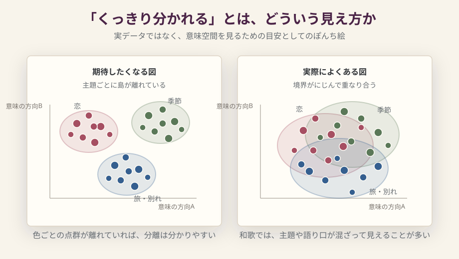

なぜ百人一首を
意味空間に置くのか
このシリーズは、AIの埋め込み技術を使って、百人一首を意味の地図として眺める試みである。百首を意味の近さによって並べたら、どんな地図ができるだろう。恋の歌は一か所に集まるのか。季節の歌はどう分かれるのか。作者や時代とは別に、意味だけで見た近さや遠さはあるのか。序章では、個々の歌を詳しく読む前に、AI支援の道具としての意味空間の考え方と、その読み方の注意点を整理する。
ここでいうAI支援とは、AIに百人一首の解釈を決めてもらうことではない。埋め込みモデルを使って、一首ごとの本文を「数値の住所」に変え、近い歌、遠い歌、順番の中で大きく跳ぶ場所を探す。そのうえで、見つかった場所を人間がもう一度読む。AIは結論を出す審判ではなく、読み返す場所を照らす道具として使う。
1. 百人一首とは
百人一首という言葉は、広く言えば、百人の歌人から一首ずつ選んだ歌集の形式を指す。その中で、現在もっともよく知られているのが小倉百人一首である。正月のかるた、学校で覚えた上の句と下の句、競技かるたの札。多くの人にとって、百人一首はまず遊びや暗記の記憶として現れる。
けれど、少し引いて見ると、これはかなり不思議な本である。天智天皇から順徳院まで、長い時代にわたる歌人を一人一首ずつ並べる。天皇、貴族、僧、女房、歌人たちが同じ百首の中に入る。春夏秋冬、恋、旅、老い、無常、宮廷的な場面、個人的な嘆きが、たった百首に詰め込まれている。
しかも、一首一首は短い。和歌は31音しかない。その短さの中に、季節、場所、恋の痛み、別れ、政治的な記憶、過去の歌への響きが折り畳まれる。知っているようで、実はかなり圧縮されたものを読んでいる。百人一首を「有名な百枚の札」としてだけでなく、「百首がどう選ばれ、どう並べられたか」として見ると、急に別の顔が出てくる。
この序章で大事なのは、細かな計算を覚えることではない。「似た意味の歌を近くに置く地図を作る」「その地図を手がかりに本文へ戻る」という読み方をつかむことである。この地図は、百人一首の正しい解釈をAIに決めさせるものではない。歌を読み直すための補助線である。知らない言葉が出るときは、本文でいったん短く言い換え、詳しい説明は用語集に置く。
2. 問いの置き方
ここで注目したいのは、その百首が単に選ばれているだけでなく、順番を持っていることである。1番から100番まで、歌は一列に並んでいる。もしそれがただの索引ではなく、何らかの流れを持つなら、その流れはどこに現れるのだろうか。
もし、この百首をカルタ札としてではなく、夜空の星のように並べたらどう見えるだろう。恋の歌はひとつのあたりに寄るのか。孤独な歌は孤独な場所に浮くのか。後半に進むにつれて、景色は変わるのか。そういう問いは、専門家でなくても少し気になる。序章は、その気になる感じを、乱暴な断定にせず、検査できる形へ変えるための入口である。
百人一首をめぐっては、隠された暗号、政治的なメッセージ、二首一組、対応する歌、配列の謎といった読みが語られてきた。そこには、たしかに浪漫がある。百首がただの名歌集ではなく、何かを秘めた配置に見えるからこそ、人はその奥をのぞきたくなる。
このシリーズは、その浪漫を否定しない。ただし、「暗号を発見した」とは言わない。代わりに、「この百首をこの順番で置いたとき、主題や語り口の流れはどう見えるのか」と問い直す。近い歌は近くにあるのか。急に遠くへ跳ぶ場所はあるのか。百人秀歌と小倉百人一首で、並びの性格は変わるのか。そういう問いを、意味空間という地図の上で試してみる。
重要なのは、結果がきれいに出るとは限らない、ということだ。むしろ、きれいに分かれないことにも意味がある。和歌は短い。意味は本文だけでなく、詞書、部立、本歌取り、歌枕、注釈、享受史に散っている。だからこのシリーズでは、図を結論として見せるのではなく、「ここを読むと面白そうだ」という入口として使う。
3. 小倉百人一首と百人秀歌
小倉百人一首は、一般に藤原定家周辺と結びつけて語られる百人一首である。ただし、現在広く知られる形がどのように成立したのか、定家がどの範囲まで直接整えたのか、後代の伝承や編集がどこまで関わるのかは、単純に言い切れない。成立、撰者、配列、出典、かるたとしての享受史が重なっている。[L-1]
そこで効いてくるのが百人秀歌である。百人秀歌は、小倉百人一首によく似た選歌で、この読み物では101首の本文として扱う。同じ歌人や同じ歌を多く含むが、完全に同じではない。小倉に入る後鳥羽院・順徳院を欠き、一条院皇后宮、源国信（権中納言国信）、藤原長方（権中納言長方）を含む。また源俊頼は同じ歌人でありながら、百人秀歌では小倉とは別の歌が採られている。ここで人名を覚える必要はない。大事なのは、ほとんど同じ材料を使いながら、数首が差し替わり、並びも異なる、という点である。[D-5]
この差を、ただの「別バージョンの違い」として片づけてしまうのは少し惜しい。後鳥羽院・順徳院が小倉に入り、百人秀歌にはいないこと。源俊頼が別歌で現れること。百人秀歌側にだけ見える歌人がいること。これらは、承久の乱の後の政治状況、後鳥羽院を中心とする歌壇、新勅撰和歌集、時代不同歌合、定家とその子である為家をめぐる議論と重ねて読まれてきた。ここで細部まで覚える必要はない。まずは、百人一首と百人秀歌の差が、文学史の中でも気になる差として扱われてきた、と押さえればよい。[L-2]
ただし、このシリーズは、そこから政治的意図を断定しない。後鳥羽院・順徳院の有無を、いきなり「隠されたメッセージ」として読まない。まずは、差し替えられた歌、移動した歌、隣り合う歌を並べ直し、どこに意味的な山や谷が見えるかを観察する。
4. 意味空間とは何か
このシリーズでは、まず歌を「数字の住所」に変える。住所が近ければ近所であり、遠ければ別の町にある。文章も同じように、意味や雰囲気が近いものを近い場所に置けるようにする。この数字の住所の正体が、たくさんの数字を並べたベクトルである。そして、文章をそうした数値の住所へ変換することを、専門用語では「埋め込み」、あるいは embedding と呼ぶ。
方法を大まかに言えば、三段階である。歌を数字に変える。その数字どうしの近さを測る。最後に、人間が見られる二次元の図へ写す。細かな計算は後回しでよい。まずは、この三つの流れだけ押さえれば、第1章の図は読める。
たとえば、恋の嘆きに近い歌、秋の景色に近い歌、旅や別れに近い歌があるとする。人間なら「これは雰囲気が近い」と感じる。その近さを、AIのモデルはたくさんの数字の組み合わせとして表す。数字そのものを読む必要はない。大事なのは、その数字によって「この歌とこの歌は近い」「ここで流れが変わる」といった比較ができるようになることだ。
その数字の住所を使うと、歌どうしの距離を測れる。近い住所にある歌は、言葉や主題や語り口が似ている可能性がある。遠い住所にある歌は、違う種類の感情や景色を持っている可能性がある。こうして百首を置いた仮想的な地図が、このシリーズで言う意味空間である。[M-1]
図0-1では、左から右へ読む。まず歌の本文があり、それを数字の住所に変え、最後に似た歌が近くに来る地図として見る。ここでは細かな数値ではなく、「歌を点として置けるようにする」という流れだけを見ればよい。

その住所は、どう決まるのか
ここで一つ、現代AIらしい面白さが出てくる。文章の住所は、人間が「恋は右、秋は左」と決めているわけではない。あらかじめ人間が百人一首用の分類表を作り、それに歌を当てはめているのでもない。住所を決める地図帳そのものが、学習済みのAIモデルの中にある。ここでいうAIモデルとは、文章を入力すると、意味の住所にあたる数字の列を返す仕組みだと思えばよい。
モデルは、多くの文章に触れる学習を通じて、言葉と言葉がどんな場面で一緒に出てくるか、似た言い回しがどんな文脈で使われるか、文章どうしがどんな関係を持ちやすいかを身につける。人間で言えば、大量の会話、記事、説明文、感想文を読み続けるうちに、「この言い方は近い」「この雰囲気は少し違う」という勘が育つようなものだ。
もちろん、AIが百人一首を人間の研究者のように味わっているわけではない。モデルの内部には、品詞表や注釈書のように読める知識がそのまま入っているわけでもない。それでも、学習の結果として、文章を入れると意味の向きを持った数字列が出てくる。つまり埋め込みとは、現代AIが学習で作った「言葉の勘」を、測れる座標として取り出す技術だと言える。
ここが、この実験の少し不思議なところである。平安・鎌倉の和歌を、21世紀のAIエンジンが作った意味の座標系に置いてみる。古典の専門知と、機械が学習した言葉の近さは、当然同じものではない。けれど、ときどき重なるかもしれない。その重なりを探すのが、このシリーズの楽しみである。[M-3]
寄り道: 翻訳しても、同じ歌へ戻れるか
ここで、計算の細部に入る前に、住所の比喩のまま小さな実例を見ておく。ある歌の日本語原文を数字の住所に変える。英訳100首も、それぞれ数字の住所に変える。そして、日本語原文の住所から見て、英訳の中でいちばん近い住所を探す。もしそれが同じ歌の英訳なら、モデルは言語をまたいで、ある程度同じ内容を近くに置けていることになる。
多言語に対応した埋め込みでは、日本語と英語のように言語が違っても、意味が近ければ近い場所に置かれることがある。文字が似ているから近いのではない。別の言語で書かれていても、同じ内容を指していれば、数字の住所も近くなることがある。
試しに、小倉百人一首100首の日本語原文と、Clay MacCauley の英訳100首を text-embedding-3-small で比べた。日本語原文から英訳を探すと、100首中71首で、対応する同じ歌の英訳が最近傍になった。英訳から日本語原文を探すと、100首中75首で同じ歌へ戻った。top-5まで広げると、どちら向きでも9割以上が入る。[D-6]
| 見る向き | 同じ歌が最近傍 | top-5以内 | 近さの平均 |
|---|---|---|---|
| 日本語原文 → 英訳 | 71/100 | 92/100 | 同じ歌 0.444 / 別の歌 0.240 |
| 英訳 → 日本語原文 | 75/100 | 91/100 | 同じ歌 0.444 / 別の歌 0.240 |
これは埋め込みの強みである。翻訳しても、多くの歌は高次元の意味空間で対応する歌へ戻れる。第1章以降で見る近さも、単なる文字列の一致ではなく、意味や場面の近さをある程度拾っていると考えられる。
ただし、ここに限界もはっきり出る。第一に、100首すべては当たらない。詩歌の英訳では、掛詞、余情、主語の曖昧さ、古語の響きを翻訳者が解釈して英語に置き換えるため、同じ歌でも別の方向へ寄ることがある。第二に、PCAで2次元に落とすと、日本語点群と英語点群が大きく分かれて見えた。これは、埋め込みの中に言語や文体の違いとして見える成分があり、さらにPCAが選んだ2次元断面ではその違いが目立った、ということだと考えるのがよい。元の高次元の住所どうしを比べると対応が見えていても、どの2次元断面で見るかによって、翻訳対応より言語・文体差の方が前面に出ることがある。翻訳比較は、埋め込みの強みと限界を同時に教えてくれる。
本筋としては、ここまでで十分である。以下の三つの箱は、道具をもう少し知りたい人向けの寄り道である。閉じたまま読み飛ばしても、第1章の地図は読める。
少し詳しく文章を数字の住所にするベクトルとは何か
では、数字の住所である「ベクトル」とは何か。ざっくり言えば、文章につけられた長いプロフィール表である。たとえば、レストランの口コミを読めば、人間は「安い」「落ち着いている」「一人で入りやすい」「味が濃い」といった印象をなんとなく受け取る。映画の感想なら、「明るい」「怖い」「泣ける」「テンポが速い」と感じるかもしれない。
学校で出会うベクトルは、たいてい2次元か3次元である。たとえば (1, 2) なら、横に1、縦に2進む矢印として描ける。(1, 2, 5) なら、横、縦、高さの三つの数字を持つ矢印として想像できる。どちらも、人間が図に描ける世界である。
埋め込みのベクトルも、考え方は同じである。ただし、数字の個数が急に増える。今回主に使う text-embedding-3-small では、一首が1536個の数字で表される。見た目としては、たとえば (1.2, 5.6, ..., -3.9, 0.2) のような長い数列だと思えばよい。実際には1536個も並ぶので、人間には図に描けない。そこで、計算では1536次元ベクトルの向きの近さを測り、見せるときだけPCAで2次元へ押しつぶす。

AIのモデルは、そうした印象を人間の言葉のラベルではなく、たくさんの数字の並びとして持つ。もちろん、実際の数字に「安さ」「怖さ」「泣ける度」と名前が書いてあるわけではない。そこはブラックボックスに近い。それでも、似た文章は似た数字の並びになりやすい。だから、数字そのものを読むのではなく、数字の並びどうしを比べることで、文章どうしの近さを調べられる。
少し詳しく向きの近さを測るコサイン類似度とは何か
近さを測る方法にもいくつかある。このシリーズで使うのは、専門用語では cosine similarity、日本語ではコサイン類似度と呼ばれる方法である。ここでいうコサインは、学校で習う三角関数のサイン・コサインのコサインと同じものだ。
三角関数のコサインは、角度を数に変える。二本の矢印が同じ向きなら角度は0度で、コサインは1になる。直角に交わるなら90度で、コサインは0になる。正反対を向けば180度で、コサインは-1になる。つまりコサインは、「二本の矢印がどれくらい同じ方向を向いているか」を表すのに向いている。
では、なぜ文章の近さでコサインが出てくるのか。ここで内積が登場する。二本の矢印 A と B の内積は、成分ごとに数字を掛けて足す計算で求められる。一方で、幾何的には A・B = |A| × |B| × cosθ と書ける。つまり内積の中に、二本の矢印のあいだの角度のコサインが入っている。
そこで内積を A の長さと B の長さで割ると、cosθ だけが残る。これが cosine similarity、つまりコサイン類似度である。数字の並びを一本の矢印だと思い、その矢印どうしがどれくらい同じ方向を向いているかを見る。長さそのものよりも、向きが似ているかを見る。
たとえば、二人のランチの好みを比べるとする。一人は「辛いものが好き、麺類も好き、甘いものは普通」、もう一人もだいたい同じ傾向なら、食べる量が違っても「好みの向き」は近いと言える。cosine similarity もそれに近い。文章の長さや量そのものよりも、数字で表された意味の向きがどれくらい似ているかを見る。この値が高いペアは、本文条件では似た方向を向いている可能性がある。
1536次元のベクトルでは、人間が角度を目で測ることはできない。けれど、成分ごとに掛けて足す内積は計算できる。だから高次元でも、内積を使って「角度のコサインにあたる値」を取り出せる。外積は、三次元で二本の矢印に垂直な矢印を作る別の計算で、このシリーズの近さ判定では基本的に使わない。

ここから少し細かい話に入る。まずは「このシリーズでは、長さよりも向きの近さを見る」と押さえればよい。ユークリッド距離、正規化、単位球面は、その理由を少し丁寧に見るための補助線である。
では、ここでいう「近さ」は1536次元のユークリッド距離なのか。このシリーズで主に使う近さは、そうではない。ユークリッド距離は、各次元の差を二乗して足し、最後に平方根を取る距離である。一方、このシリーズで隣接類似度や最近傍を見るときの基本値は cosine similarity で、ベクトルの長さよりも向きの近さを見る。
公開された埋め込みベクトルについては、実際のユークリッド距離も計算できる。ただし、それは正規化された後のベクトルどうしの距離である。今回使うOpenAIの埋め込みは、ベクトルの長さが1になるよう正規化されて返る仕様である。したがって、長さがほぼ1にそろうのは偶然ではない。OpenAIの説明でも、長さ1に正規化された埋め込みでは、cosine similarity とユークリッド距離の順位は同じになるとされている。[M-1]
つまり、今回の text-embedding-3-small では、一首のベクトルは1536次元空間の単位球面の上、正確にはほぼその上に乗っている、と考えてよい。単位球の内部に散らばっているのではなく、原点からの長さが1になる表面に並んでいる。数学的に言えば、R^1536 の中にある球面で、表面そのものの自由度は一つ少ない1535次元になる。
直感的には、二本の矢印の先端が同じ半径の球面上にあると思えばよい。向きが近ければ、球面上の先端どうしも近い。向きが大きく違えば、先端どうしも離れる。長さが1にそろっているときは、ユークリッド距離の二乗 = 2 - 2 × cosine similarity になるので、「角度で見る近さ」と「直線距離で見る近さ」は同じ順番になる。
では、なぜOpenAIは埋め込みを長さ1に正規化して返すのか。OpenAIの説明から読み取れる利点は、検索や比較の扱いやすさである。長さが1にそろっていれば、cosine similarity は内積だけで計算でき、ユークリッド距離で並べても同じ順位になる。つまり、利用者や検索システムは、どの距離尺度を使うかで結果が大きくずれる心配を減らし、速く計算しやすい方法を選べる。[M-1]
もう少し踏み込んで言えば、これは埋め込みを「意味の方向」を比べる道具として安定させる設計だと考えられる。もし長さが残っていると、長い文章だから遠い、モデルが強く反応したから遠い、頻出しやすい表現だから原点から離れる、といった半径方向の差が、意味の近さに混ざる可能性がある。正規化すると、その半径方向の差をいったん捨て、方向の違いだけに集中できる。
ここで消えているのは、二点間の距離そのものではなく、原点からの長さ、つまり半径方向の情報である。もし正規化前のベクトルがあり、その長さに解釈できる意味があるなら、素のユークリッド距離を見る分析にも意味がある。たとえば、方向は似ているが片方だけ原点から遠い、という差を拾える可能性がある。
ただ、今回手元にあるOpenAIの埋め込みでは、その半径方向の差は最初から見えない形で渡されている。ユークリッド距離を計算しても、それは単位球面上の二点を結ぶ弦の長さであり、cosine similarity と独立した別情報ではない。だから本シリーズでは、候補の確認ではユークリッド距離も見るが、本文の主役は cosine similarity に置く。これは「距離に意味がない」というより、「今回見られる距離は、すでに方向の差に変換された距離である」ということに近い。
そのため、本文で「距離が大きい」「遠くへ跳ぶ」と書く場合も、厳密には「cosine similarity が低い」、あるいは 1 - cosine similarity を距離のように読んでいることが多い。PCA図の上の距離は、2次元へ射影した後の見た目の距離であり、これも1536次元ユークリッド距離そのものではない。
注意して読む高次元の意味空間を2次元の地図にするときの歪み
ここで、かなり大事な注意がある。本文で見るPCA図は、元の意味空間そのものではない。今回の主モデル text-embedding-3-small では、一首は1536個の数字を持つ。つまり、ほんとうの比較は1536次元の場所で行われる。それをブラウザで見られるように、PCAで2次元へ射影している。
射影とは、立体に光を当てて影を見るようなものである。三次元の部屋に二つの点があり、一方は高い棚の上、もう一方は床の近くにあるとする。上から見た影だけなら、二つは同じ場所に重なって見えるかもしれない。しかし、実際には高さが違う。高次元から2次元へ落とすときにも、これと同じことが起こる。
三次元の球面を思い浮かべれば、たしかにその通りである。球の表面に十分たくさんの点を置き、それを正面から2次元へ射影すれば、影は円盤になる。手前の半球と奥の半球が重なって、円の中が点で埋まって見える。
1536次元でも、理屈の上では同じである。原点を通る2次元平面へそのまま正射影すれば、影として取りうる範囲は半径1の円盤になる。ただし、ここで大事なのは、取りうる範囲と、実際に点が濃く出る場所は別だということだ。高次元の球面上にランダムな点を置くと、任意の2次元だけに見える成分はごく小さくなりやすい。1536次元なら、ランダムな点の2次元射影の典型的な半径は、おおよそ √(2 / 1536)、つまり約0.036になる。

だから、数学的には半径1の円盤が射影の範囲であっても、普通のサンプル数では円盤の外側まで点がまんべんなく出るとは限らない。むしろ中心付近の小さな雲として見えやすい。さらにPCA図では、先に点群の平均を引き、もっとも広がりが見えやすい方向を選び、表示上も見やすいように拡大して描く。そのため、PCA図の枠や点の広がりは、単位球面の外周そのものではなく、今回のデータ集合の「影の広がり」を見ている。
もう一つ、原点にも注意がいる。PCA図に十字の線が引かれていると、そこが「埋め込み空間そのものの原点」に見えるかもしれない。しかし、そうではない。PCAでは、まず今回描く点群の平均を引いて、データを中心に寄せる。だからPCA図の原点は、その図を作るために使ったデータ集合の中心に近い基準点である。1536次元の埋め込みベクトルのゼロ点ではない。
つまり、小倉100首だけで作った図と、小倉100首に百人秀歌差分4首を足した図では、原点も軸も同じとは限らない。PC1やPC2、つまりPCAで選ばれた横軸・縦軸の向きも、図ごとに符号が反転することがある。PCA図は同じ紙面内の位置関係を見るための見取り図であり、別々に作った図どうしを、そのまま同じ地図として重ねて読んではいけない。
では、その中心を基準に図を四つの領域へ分けたとき、右上と左下、右下と左上のような「方角の違い」は意味がないのか。そんなことはない。同じPCA図の中では、中心から見た方角は、PC1とPC2という二つの軸に対して、どちら側の特徴が強く出ているかを表す。だから、中心から十分離れた点どうしが反対方向にあれば、その2次元図の中ではかなり違う場所にいる、と読んでよい。
ただし、それはあくまで「この2次元に映った範囲で」の話である。中心のすぐ近くにある二点なら、別々の象限に入っていても距離は小さい。逆に、同じ象限にあっても、中心からの遠さが大きく違えばそれなりに離れている。さらに、PCA図に出なかった残りの次元で大きく違うこともある。したがって、四象限の方角は読解の手がかりにはなるが、高次元の距離やcosine similarityそのものとは区別して読む。

だから、図の上で「右下に離れている」「左寄りに出る」と言うとき、それはまず「2次元図の上ではそう見える」という意味である。高次元の意味空間で本当に近いか遠いかは、cosine similarity や最近傍の一覧で別に見る必要がある。図は直感をくれるが、図だけで結論を出す道具ではない。
くっきり分かれる、とはどういうことか
意味空間の図を見るとき、つい期待したくなるのは、主題ごとに点がきれいな島を作ることである。恋の歌は恋の島へ、季節の歌は季節の島へ、旅や別れの歌は別の島へ、という具合である。そうなれば、見た瞬間に「分かれている」と言える。
しかし、実際の文章では、そこまで都合よく分かれないことも多い。恋の歌に秋の景色が入り、旅の歌に別れの気分が入り、雑の歌に老いや無常が混ざる。和歌は特に短く、ひとつの歌にいくつもの気配が圧縮される。だから点は、島になるより、にじんで重なり合うことがある。

ただし、この道具は万能ではない。和歌は短い。しかも意味は本文だけに閉じない。「秋」「恋」「山」「月」といった語が近さを作ることもあれば、モデルが古語や掛詞をうまく扱えないこともある。近いからといって、二首が文学的に同じ意味を持つとは言えない。
とくに本文のみの埋め込みでは、意味の近さと語彙の重なりを完全には分けられない。同じ語が効いて近く出ているのか、語を越えて主題や声の調子が近づいているのかは、図だけでは決まらない。だから近く出た歌ほど、本文に戻って、どの言葉が近さを作っているのかを確かめる必要がある。将来的には、主要語を伏せた版や、現代語訳・注釈を加えた版との比較も検査候補になる。
逆に、意味空間で遠いからといって、関係がないとも言えない。本歌取りや歌枕、詞書、撰集内の部立、歴史的文脈は、31音本文だけでは拾いにくい。だから第1章では、まず本文に近い条件で地図を作り、どこまで見えるか、どこから見えなくなるかを確認する。モデル条件は参照資料にまとめる。[M-3]
それでは、実際の図を一枚だけ先に見ておく。ここでは歌番号や細部を追わなくてよい。点が一首を表し、色は初期の主題分類を表す。近くにある点ほど、モデル上では似た意味を持つ歌として扱われている。ただし、地球儀を平面の地図にすると歪みが出るように、意味空間を2次元に描くと距離関係は多少歪む。全体としてどれくらいまとまるのか、あるいは思ったほどまとまらないのかを見る。

持ち帰るべき観察は、きれいな島がすぐに見えるわけではない、ということだ。その曖昧さも含めて、第1章では、近い歌、遠くへ跳ぶ歌、百人秀歌との差し替えを一つずつ見ていく。
5. 何を見るのか
第1章では、まず和歌本文と読みを中心にした条件で地図を作る。現代語訳や注釈的パラフレーズを使えば、モデルには意味が伝わりやすくなるかもしれない。しかし、その場合は訳者や注釈者の解釈も一緒に入る。だから最初は本文に近い条件から始め、必要に応じて現代語訳、注釈、主題タグを加えた条件と比較する。ローマ字表記は、少なくとも日本語の意味を読む主条件にはしない。
図で使う分類ラベルも、機械が勝手に決めたものではない。恋、春、秋、旅、別れ、雑といった、古典和歌で使われてきた主題区分を参考にした初期タグである。古典では、和歌を主題ごとに分ける分類を「部立」と呼ぶ。ここでは厳密な校訂分類ではなく、地図を読むための仮ラベルとして使う。
また、百首という数は、文学的には一つのまとまりだが、データ分析としては決して多くない。ここでは統計的に強い結論を出すというより、配置の傾向を観察し、読み直しのきっかけを探す。その前提で、このシリーズで見るのは大きく六つである。
ここで大事なのは、統計値を文学的意味に直結させないことだ。percentile、つまりランダムな順番と比べてどれくらい上にいるかを表す値が高いからといって、配置意図が証明されたわけではない。逆に、値が低いからといって、古典的な読解が無効になるわけでもない。数値は、読む場所を探すための灯りであって、読解そのものではない。
だから、数値が高く出た場所は、必ず歌本文と参照資料へ戻して見る。注釈や先行研究がすでに近いものとして読んできた歌が、埋め込みでも近く出るなら、それは「人間の読解とAIの見え方が重なった」観察として記録できる。逆に、文献上は重要そうなのに数値では近く出ない場合も、本文だけでは拾えない歌枕、部立、本歌取り、歴史的文脈があるかもしれない。どちらの場合も、数値だけで終わらせず、歌と文献に戻る。

6. 前作から引き継ぐもの
このシリーズは、筆者が先に公開した 意味埋め込みによる仏教文献の探索地図[P-1] と 法然・親鸞の共有核とはみ出し領域[P-2] の延長にある。そこでは、仏教テキストや法然・親鸞に関わる語りを意味空間に置き、近接する箇所や共有される主題を可視化した。
ただし、仏教文献と和歌では条件が違う。仏教テキストは比較的長い文脈を持つことが多い。一方、和歌は短く、情報が圧縮されている。だから百人一首では、前作よりもさらに慎重に、近さを「答え」ではなく「入口」として扱う必要がある。
公開形式も前作の流れを引き継ぐ。論文として固定するのではなく、HTMLで読める更新可能な読み物として育てる。図を出し、数値を出し、ただし断定しすぎない。文献確認が進めば書き換える。モデルを変えれば見え方も変わる。その変化も含めて、このシリーズの一部にする。
7. この読み物の約束
目指したいのは、一般向けの科学読み物に近い形である。入口は軽く、問いはわかりやすく、しかし道具の説明と限界はごまかさない。百人一首を知らない人にも「ちょっと見てみたい」と思ってもらい、古典に詳しい人にも「その見方なら、ここを確かめたい」と思ってもらう。
そのため、本文では三つの約束を守る。第一に、暗号や政治的意図を断定しない。第二に、埋め込みの近さを、作者や撰者の意図そのものとは呼ばない。第三に、数値で山が立った場所を、本文や文献へ戻る入口として扱う。
執筆にはAI支援も使う。人間が問い、方針、採否を決め、AIが草稿化、要約、図表説明、検査手順の整理を補助する。さらに査読的な読みを入れ、過剰な主張、根拠の弱い推論、専門研究への踏み込みすぎを削る。これは学術誌の専門査読を代替するものではないが、面白さと慎重さを両立させるための仕組みである。
8. 第1章へ
今回は、百人一首を意味空間で読むための考え方を整理した。大切なのは、意味空間が正解を出す装置ではなく、読み直すための地図だということである。地図は現実そのものではないが、全体の形をつかんだり、意外な近さに気づいたりする助けになる。
第1章では、まず本文のみ、あるいは本文にかなり近い条件で、小倉百人一首と百人秀歌を意味空間に置いてみる。最初からきれいな結論は出ない。むしろ、主題クラスタがそれほど明瞭には分かれないこと、順序全体では強い信号が出ないこと、その一方で差し替え歌や仮説配置の一部では局所的な山が立つことを、そのまま記録する。
続編では、出典勅撰集、部立、詞書、現代語パラフレーズ、歌人の時代や関係を少しずつ重ねていく。31音本文だけでは見えない古典的文脈を、地図の上に足していくためである。第1章は、そのための最初の荒い地図である。
本文としては、ここで第1章へ進める。射影の数学的な補足を読みたい場合は、この下の付録Aへ進んでほしい。
付録A. 高次元の球面を2次元へ落とすと何が見えるか
本文では、1536次元の単位球面を2次元へ射影すると、取りうる範囲は半径1の円盤になるが、点は中心付近に寄って見えやすい、と書いた。ここでは、その減り方だけを少し詳しく見ておく。本筋からは外れるので、数式が苦手なら読み飛ばしてよい。
1536次元の単位球面に、一様ランダムに点があるとする。その点を、原点を通る2次元平面へ正射影し、2次元図の中心からの距離を r とする。このとき、面としての密度は中心から外へ、おおよそ (1 - r²)^766 の形で減る。さらに、半径 r より外側に出る割合は (1 - r²)^767 になる。
| 2次元射影での半径 | その外側に残る割合 | 読み方 |
|---|---|---|
| 0.03 | 約50% | ほぼ中央値。半分はこの内側、半分は外側。 |
| 0.05 | 約15% | この時点で約85%は内側に入る。 |
| 0.08 | 約0.7% | かなり外側。1000点でも数点程度。 |
| 0.10 | 約0.045% | 1万点あっても4、5点程度。 |
ただし、「中心に寄る」と言うときには二つの見方がある。面密度としては中心がもっとも濃い。一方、半径ごとに輪切りにして数えると、外側ほど円周が長くなるため、山は中心ぴったりではなく少し外に来る。1536次元の場合、その山は半径約0.026付近である。
ここでの計算は、あくまで「単位球面上にランダム一様な点がある」という理想化である。実際の文章埋め込みは、自然言語の偏りやモデルの学習結果を持つので、完全なランダム点ではない。それでも、2次元図に見えている点の広がりを、単位球面そのものの外周と取り違えないための目安にはなる。
実際の百首図ではどうか
では、第1章で使う小倉百人一首100首のPCA図では、点群はどのくらいの円に入っているのか。text-embedding-3-small の公開用PCA座標で見ると、2次元図の原点から各点までの半径は、中央値が約0.239、平均が約0.245、最大が約0.454だった。半径1の円から見れば、かなり小さい範囲に収まっている。
ただし、これは先ほどのランダム射影の典型値0.036よりはずっと大きい。理由は、PCAが「任意の2次元平面」ではなく、今回の100首がもっともよく広がって見える2方向を選ぶ方法だからである。ランダムな影なら小さく潰れるところを、PCAはあえて広がりのある影を探す。
したがって、この差だけをもって「百人一首に意味構造がある」とは言えない。PCAは、点群がよく広がる方向を選ぶ方法なので、ランダムな2次元射影より半径が大きく見えるのは自然なことである。意味のまとまりを見るには、第1章以降のランダム順列との比較や、近接ペアの本文読みへ進む必要がある。
もう一つ、画面上の図は見やすいように拡大されている。だからブラウザでは枠いっぱいに点が広がって見えても、数学上のPCA座標では半径0.45程度の円に収まっている。図はそのまま単位球面を見ているのではなく、中心を取り直し、よく広がる向きを選び、表示用に拡大した「読める影」なのである。